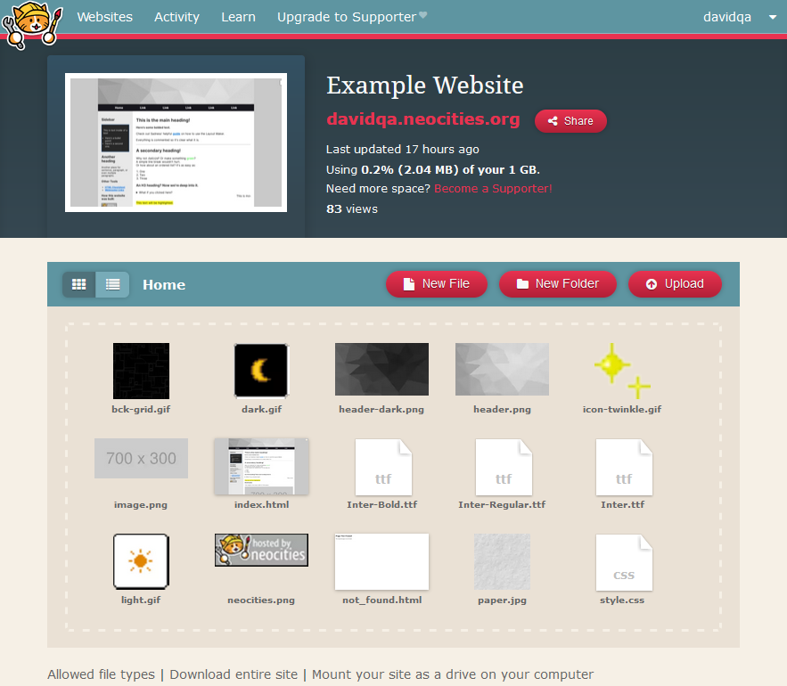
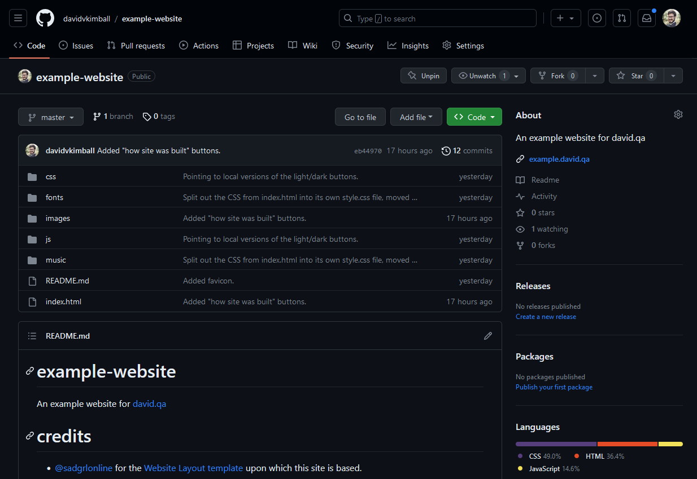
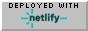

Making an Retro Website
If you're wanting to make a simple website, like what you might find on Neocities (or any website before 2005), you're in the right place!
How do you want to host it?
Option A: Host on Neocities (easier but more limited)
Option B: Host on GitHub (more advanced but with fewer limits)
What's the functional difference?
On the user's end, there practically is none. From the example sites above, you can see each site is nearly identical.
However on the backend as a webmaster, you will have access to different features and levels of control.
Option A: With Neocities, you're limited to 1GB of storage, can only upload certain types of files, and cannot use a custom domain name (like example.com). But if those limitations don't matter to you (and they don't for most) it's a great place to start!
Dashboard view:
Option B: If you want more storage space (virtually unlimited on GitHub with up to 100GB of bandwidth a month with Netlify), a custom domain name, and the ability to upload almost any file, hosting on GitHub and deploying on Netlify if your best bet. This is the solution I use for create.david.qa!
GitHub repository view
What do I need to get started?
Click the buttons below to get what you need for each option.
Option A: Sign up for Neocities
Option B: Sign up for GitHub and Netlify and install Visual Studio Code (optional).

If you want to use your own code editor instead of VS Code, that's fine, too! I also like NotePad++.
Let's Make Your Website
All signed in and setup? Let's rock and roll!